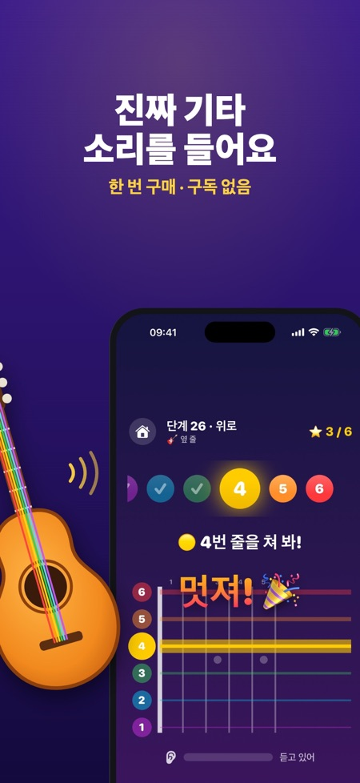
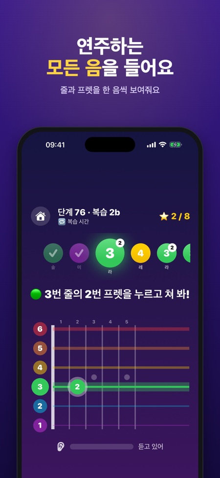
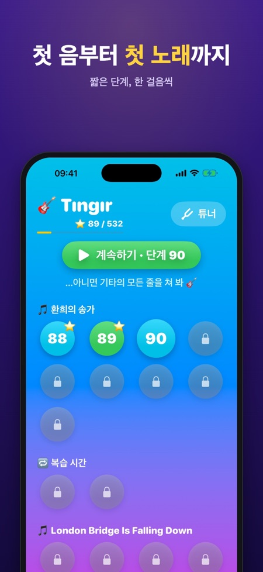

레슨, 노래, 튜너. 진짜 기타를 들면 Tıngır가 들어요! 맞는 음마다 박수, 단계마다 색종이 축하. 첫 음부터 첫 노래까지 500개가 넘는 단계. 광고 없음 · 구독 없음 · 데이터 수집 없음.



Tıngır는 아이들이 진짜 기타를 치면서 기타를 배우는 게임이에요. 화면을 누를 필요가 없어요. 기타가 바로 컨트롤러예요. iPad나 iPhone을 앞에 두고 줄을 튕기면 Tıngır가 마이크로 듣고 어떤 줄, 어떤 음을 쳤는지 알아내요.
아주 쉽게 시작해요
• 먼저 개방현: 한 줄씩, 두 번씩, 옆 줄
• 다음은 프렛을 누르는 음을 하나씩
• 그다음은 노래: 부분별로, 노래 전체, 마지막엔 외워서
532단계, 34곡
생일 축하합니다, 환희의 송가, 징글벨, 코로부치카, 엘리제를 위하여 등 — 굵은 줄과 다른 조로도 연주해요.
한 걸음마다 박수
맞는 음마다 "최고!", 단계가 끝나면 별과 색종이와 팡파르. 틀려도 벌은 없어요. "다시 해 보자!"뿐이에요.
화면을 만지지 않고 연주해요
단계가 끝나면 모든 줄을 쳐서 다음 단계로 넘어가요.
튜너 내장 · 40개 언어
개인정보
계정 없음, 광고 없음, 데이터 수집 없음. 마이크는 음을 알아내기 위해 기기 안에서만 쓰이고, 아무것도 녹음하거나 보내지 않아요.
어쿠스틱, 일렉트릭, 클래식 기타 모두 사용할 수 있어요.
한 단계는 이렇게 진행돼요
1. Tıngır가 칠 줄과 누를 프렛을 색깔 줄과 큰 숫자로 보여 줘요.
2. 아이가 진짜 기타로 그 음을 쳐요.
3. Tıngır가 음을 듣고 박수를 친 다음 다음 음으로 넘어가요. 악보를 읽지 못해도 괜찮아요.
부모님께
• 단계가 짧아서 매일 연습하기에 좋아요
• 진행 상황은 이 기기에 저장돼요. 회원 가입이 필요 없어요
• 오프라인으로 작동해요. 연주할 때 인터넷이 필요 없어요
• 기타 학원에 가기 전 첫걸음으로도, 학원과 함께하는 집 연습으로도 좋아요
• 색깔과 숫자가 길을 알려 줘서 악보나 음악 지식 없이도 시작할 수 있어요
• 틀려도 감점이 없어요. 칭찬을 받으며 조금씩 실력이 늘어요
자주 묻는 질문
어떤 기타를 쓸 수 있나요?
어쿠스틱, 클래식, 일렉트릭 기타 모두 쓸 수 있어요. 아이용 작은 기타도 괜찮아요.
시끄러운 방에서도 되나요?
조용한 방에서 기기를 기타 가까이에 두면 가장 잘 들려요.
기타 음이 맞지 않으면요?
먼저 내장 튜너로 줄을 맞춰 주세요. 그러면 모든 음을 정확하게 알아들어요.
몇 살부터 할 수 있나요?
줄을 튕길 수 있다면 몇 살이든 시작할 수 있어요. 어린아이는 보호자와 함께 개방현 단계부터 시작하는 것을 추천해요.
한 번 구매로 532개 레벨과 34곡이 모두 열려요. 구독 없음. 구매 화면은 보호자 확인 뒤에 있어요.